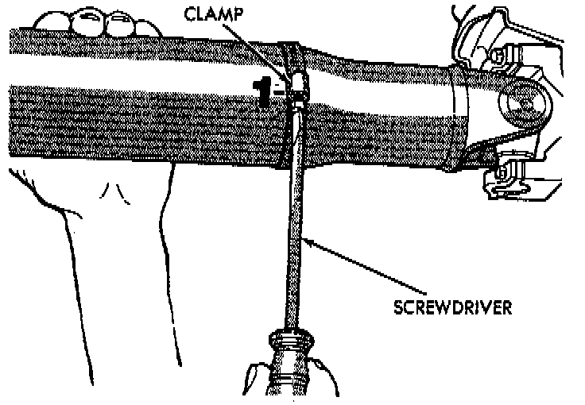
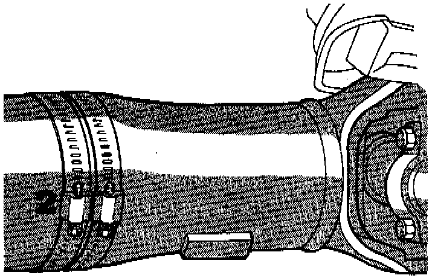
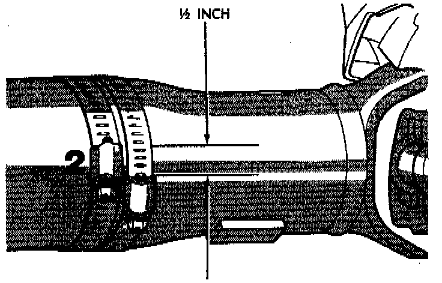

Unbalance
NOTE: Removing and re-indexing the propeller shaft 180° relative to the yoke may eliminate some vibrations.If propeller shaft is suspected of being unbalanced, it can be verified with the following procedure:
1. Raise the vehicle.
2. Clean all the foreign material from the propeller shaft and the universal joints.
3. Inspect the propeller shaft for missing balance weights, broken welds, and bent areas. If the propeller shaft is bent, it must be replaced.
4. Inspect the universal joints to ensure that they are not worn, are properly installed, and are correctly aligned with the shaft.
5. Check the universal joint clamp screws torque.
6. Remove the wheels and tires. Install the wheel lug nuts to retain the brake drums or rotors.
7. Mark and number the shaft six inches from the yoke end at four positions 90° apart.
8. Run and accelerate the vehicle until vibration occurs. Note the intensity and speed the vibration occurred. Stop the engine.

9. Install a screw clamp at position 1.
10. Start the engine and re-check for vibration. If there is little or no change in vibration, move the clamp to one of the other three positions. Repeat the vibration test.
11. If there is no difference in vibration at the other positions, the source of the vibration may not be propeller shaft.

12. If the vibration decreased, install a second clamp and repeat the test.

13. If the additional clamp causes an additional vibration, separate the clamps (1/4 inch above and below the mark). Repeat the vibration test.
14. Increase distance between the clamp screws and repeat the test until the amount of vibration is at the lowest level. Bend the slack end of the clamps so the screws will not loosen.
15. If the vibration remains unacceptable, apply the same steps to the front end of the propeller shaft.
16. Install the wheel and tires. Lower the vehicle.